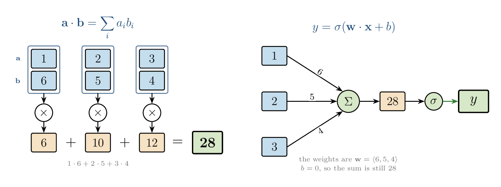
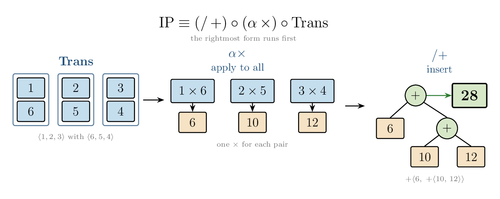
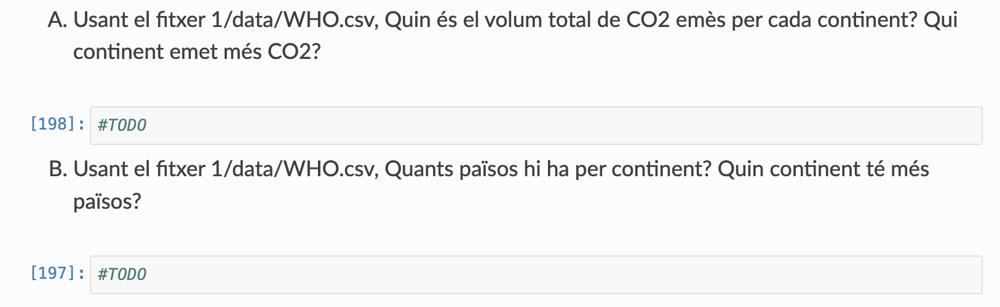
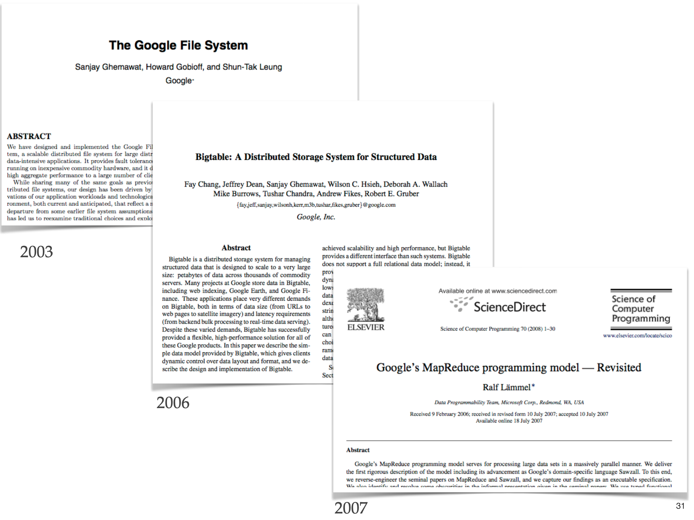
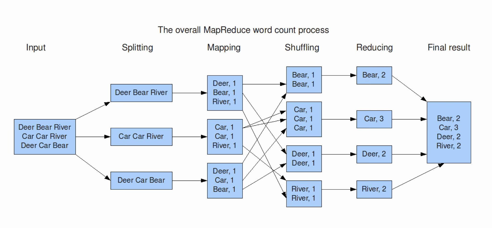

Sistemas Actuales de Computación
Two higher-order functions. The programmer writes the function; something else walks the collection.
Map applies one function to every element. No element sees another, and the output has one result per input.
Reduce folds a collection into one value with a binary operator and a starting value.
add is associative, the fold can be a tree.The two functions are older than the system that took their names.
maplist in the first Lisp paper (McCarthy 1960). The function receives each successive tail of the list. The Lisp 1.5 manual adds mapcar, one call per element (McCarthy et al. 1962).+/x is the sum of the vector x, and ×/x is the product. The programmer does not write the loop.Dean and Ghemawat keep the Lisp names and turn the pair into the interface of a batch system on a cluster (Dean and Ghemawat 2004).

A neuron multiplies each input by a weight and adds the products. That sum is the inner product, plus a bias, and an activation is applied to the scalar (Goodfellow et al. 2016). A dense layer repeats the inner product once per output unit.
~7B LLM has around ~32–40 Tranformer layers x ~6–7 internal layers \(\Rightarrow\) +500 inner products




The user program starts on many machines. One copy is the master. It keeps the list of tasks and gives the next one to a worker that is free (Dean and Ghemawat 2004).
The file is already in pieces before the job starts.
A map task reads one piece. The master asks where the replicas are and runs the task on a worker that holds one, or on the same rack. Hadoop’s first MapReduce uses the same split of roles: a JobTracker assigns tasks, and a TaskTracker runs them. Effect: Thousands of machines read input at local disk speed
Reduce tasks are divided by key. A hash of the key selects one of (R) tasks, so every pair with that key meets in a single worker. Map outputs stay on the local disk of the machine that ran the map. The reduce worker reads them from there. The master sends the addresses, not the bytes. Don’t need to transfer input data all over the cluster over the network: eliminate network bottleneck!
The master pings the workers (heartbeat). If a worker stops, its map tasks go back on the list and another worker runs them: that output lived only on local disk. A reduce that has finished stays finished. Its file is already stored in GFS or HDFS, with replicas.